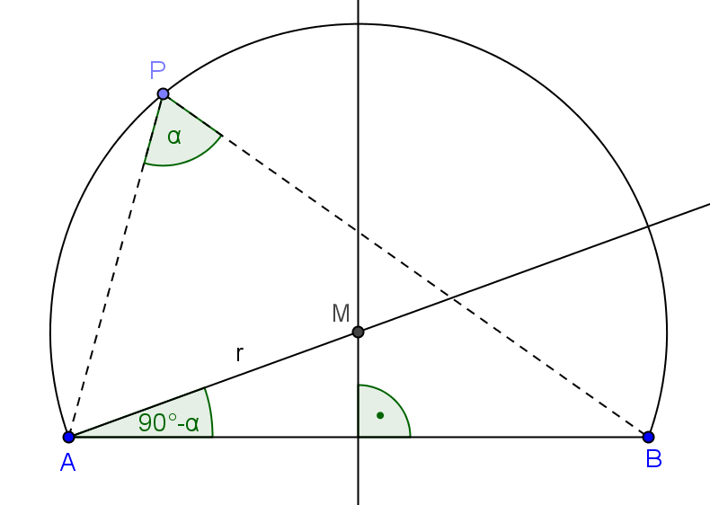

Aufgabe 9.5
Zu einer gegebenen Strecke $AB$ und einem Winkel $0<\alpha<90^\circ$ lässt sich der zugehörige Fasskreisbogen folgendermassen konstruieren:
Die Mittelsenkrechte der Strecke $AB$ und der freie Schenkel des Winkels $90^\circ-\alpha$ schneiden sich im Mittelpunkt $M$ des Fasskreises, welcher $AB$ als Sehne besitzt.

Beweisen Sie nun die Ortslinienaussage zum Fasskreisbogen, wonach dieser nämlich der geometrische Ort aller Punkte $P$ ist, von denen aus die Strecke $AB$ unter dem Winkel $\alpha$ zu sehen ist.
Ergänzung.
Wie lässt sich der Fasskreisbogen für $\alpha>90^\circ$ konstruieren?
- Nutzen Sie den Peripheriewinkelsatz
- Der Mittelpunkt liegt auf der Mittelsenkrechten von AB
- Wie hängt der Mittelpunktswinkel mit dem Peripheriewinkel zusammen?
- Für Winkel > 90°: Denken Sie an den anderen Kreisbogen
Der Fasskreisbogen - Beweis der Ortslinienaussage
Satz: Der Fasskreisbogen über der Strecke $\overline{AB}$ zum Winkel $\alpha$ ist der geometrische Ort aller Punkte $P$, von denen aus die Strecke $\overline{AB}$ unter dem Winkel $\alpha$ erscheint.
Konstruktion des Fasskreises:
Für $0° < \alpha < 90°$:
- Errichte die Mittelsenkrechte $m$ von $\overline{AB}$
- Trage in $A$ den Winkel $90° - \alpha$ an $\overline{AB}$ an
- Der Schnittpunkt des freien Schenkels mit $m$ ist der Mittelpunkt $M$
- Der Kreis um $M$ durch $A$ (und $B$) ist der Fasskreis
Beweis Teil 1: Jeder Punkt auf dem Bogen erfüllt die Bedingung
Sei $P$ ein beliebiger Punkt auf dem Fasskreisbogen.
- Im Dreieck $\triangle AMB$ gilt:
- $|MA| = |MB|$ (Radien)
- $\angle MAB = 90° - \alpha$ (Konstruktion)
- $\angle MBA = 90° - \alpha$ (gleichschenkliges Dreieck)
- $\angle AMB = 180° - 2(90° - \alpha) = 2\alpha$
- Nach dem Peripheriewinkelsatz: $$\angle APB = \frac{1}{2} \angle AMB = \frac{1}{2} \cdot 2\alpha = \alpha$$
Beweis Teil 2: Nur Punkte auf dem Bogen erfüllen die Bedingung
Sei $P$ ein Punkt mit $\angle APB = \alpha$.
- Der Umkreis des Dreiecks $\triangle APB$ hat einen Mittelpunkt $M'$
- Nach dem Umkehrsatz des Peripheriewinkelsatzes: $\angle AM'B = 2\alpha$
- Aus der Eindeutigkeit der Konstruktion folgt $M' = M$
- Also liegt $P$ auf dem Fasskreis
Ergänzung für $\alpha > 90°$:
Für $\alpha > 90°$:
- Konstruiere den Fasskreis für $180° - \alpha < 90°$
- Nutze den anderen Kreisbogen (der grössere Bogen)
- Der Peripheriewinkel über dem grösseren Bogen ist $180° - (180° - \alpha) = \alpha$
Spezialfälle:
- $\alpha = 90°$: Thaleskreis (Halbkreis über $\overline{AB}$)
- $\alpha \to 0°$: Fasskreis wird zur Geraden $AB$
- $\alpha \to 180°$: Fasskreis wird zum Punkt (Mittelpunkt von $\overline{AB}$)
Im Video: Hilfe 1 · Beweis bei 7:20